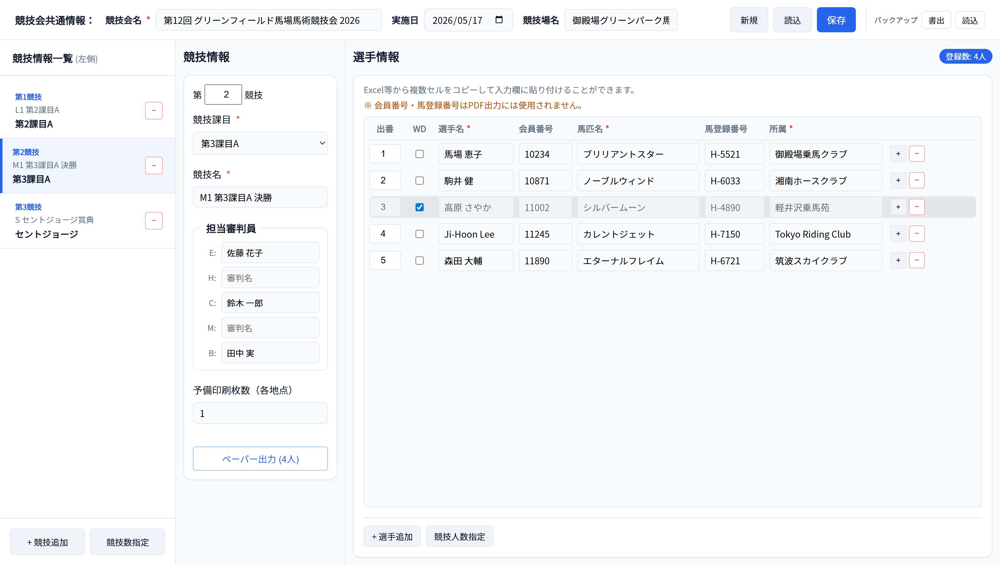
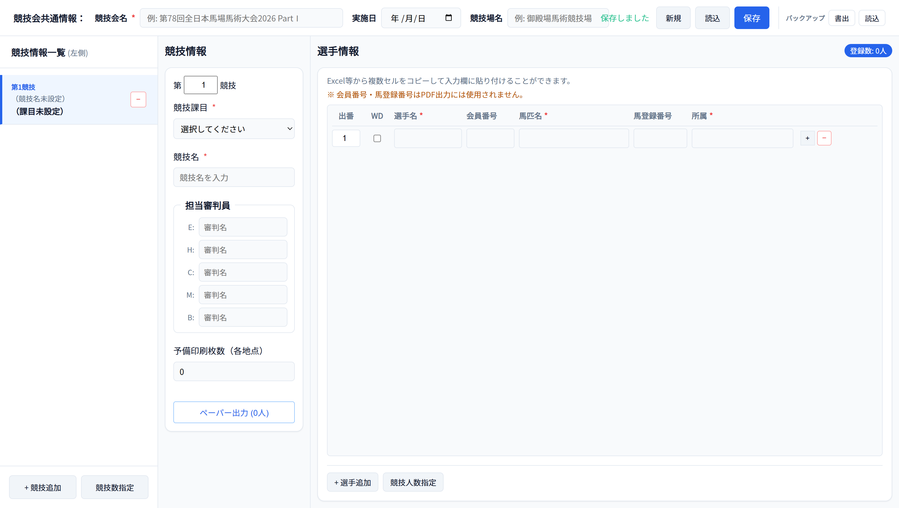
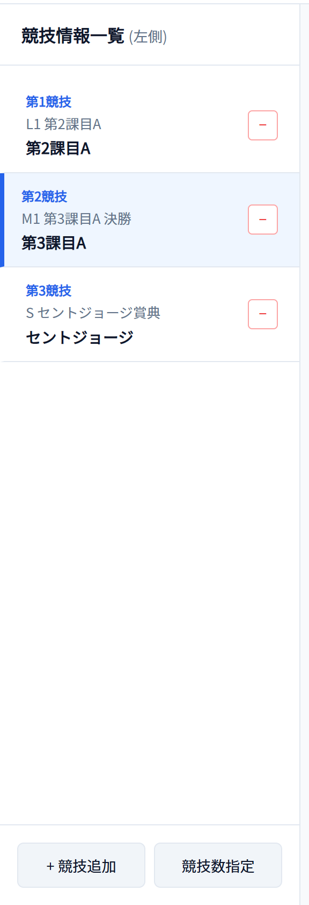
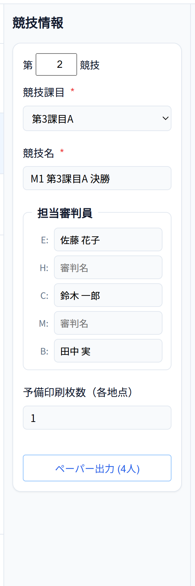
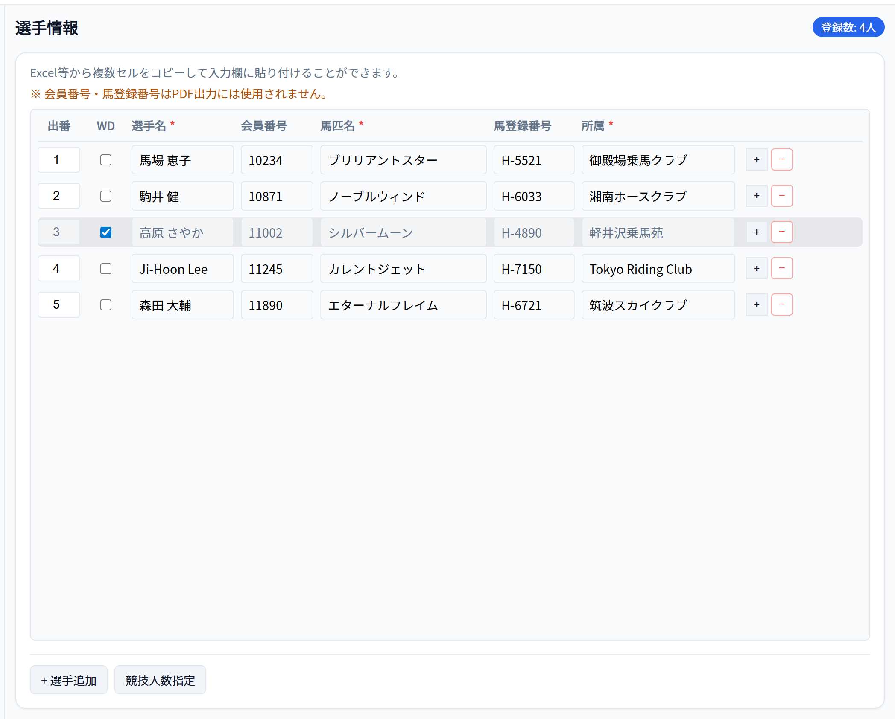
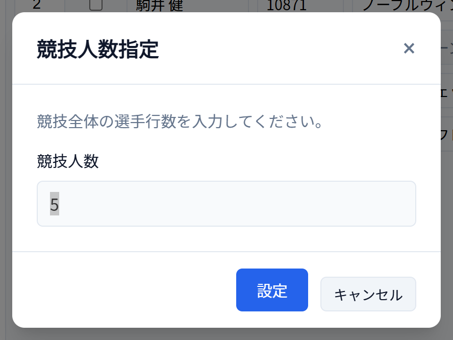
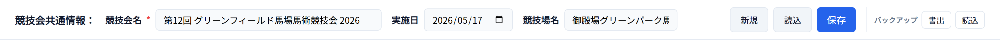
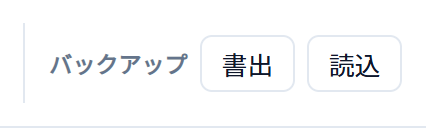
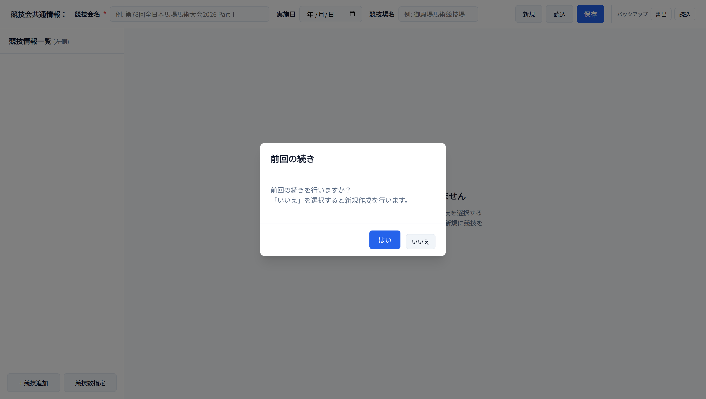
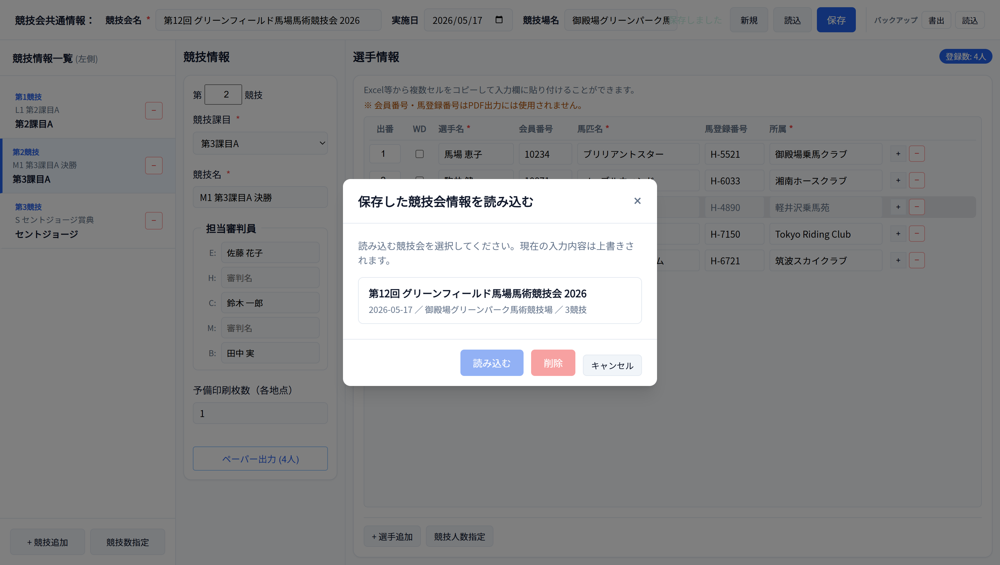

Windowsですぐ使える
portable版をダウンロードし、インストールせずにexeを開くだけで起動します。
portable版をダウンロードし、インストールせずにexeを開くだけで起動します。
競技会情報・各競技・担当審判・選手・馬匹情報を一画面で扱えます。
登録内容を課目テンプレートへ反映し、A3面付け済みのジャッジペーパーを出力します。
作業内容は自動保存されます。別PCへの移行や保管にはJSONバックアップを使います。
What You Can Do
競技会・競技・審判・選手の情報を登録すると、そのままジャッジペーパーPDFの出力までつながります。
競技会名・実施日・競技場名を登録し、大会単位で情報を整理します。
競技番号、課目、競技名、E/H/C/M/B各席の審判名を競技ごとに設定します。
選手・馬匹・所属を入力。ExcelやGoogleスプレッドシートからのまとめ貼り付けにも対応します。
対象選手×審判ごとのジャッジペーパーを作成し、A3印刷向けに面付けしてまとめます。
Guide Map
実際の作業順に並べています。各ステップの詳しい操作は下の「使い方」で画面付きで解説します。
Releasesから
portable版を入手
exeファイルを開き
アプリを開始
競技会と競技の
基本情報を登録
出番・選手・馬匹・
所属を登録
自動保存を確認し
必要ならバックアップ
競技ごとに
ペーパーを作成
保存は最後だけではありません。 入力中は現在の作業内容が常に下書き保存され、競技会名が入っていれば入力欄を離れたときや行の追加・削除時に、保存済み競技会へも自動保存されます。
Download
このページ（GitHub Pages）は説明用、アプリ本体（Windows実行ファイル）はGitHub Releasesから配布します。
インストール不要のportable版です。ダウンロードした .exe をそのまま実行すると起動します。
How To Use
「画面の見かた」→「競技をつくる」→「選手を入力する」→「保存」→「読み込み」→「PDF出力」の順に読み進められます。
1 画面の見かた
画面は「競技会共通情報（上部）」「競技情報一覧（左）」「詳細エリア（右）」の3つに分かれています。 左の一覧から競技を1つ選ぶと、右側にその競技の「競技情報」と「選手情報」が表示されます。

2 競技会と競技をつくる
上部の ［新規］ で競技会を初期化し、競技会名・実施日・競技場名を入力します。 競技会名は保存に必須です。続いて左下の ［+ 競技追加］ で競技を1つずつ増やしていきます。



3 選手情報を入力する
選手情報は競技ごとに管理します。列は 出番 / WD / 選手名 / 会員番号 / 馬匹名 / 馬登録番号 / 所属。 ExcelやGoogleスプレッドシートでコピーした範囲を、開始セルにそのまま貼り付け（Ctrl+V）できます。


4 保存のしくみ
入力中の内容は常に「作業中データ」として下書き保存されます。さらに 競技会名が入力されていれば、 入力欄からフォーカスが外れたときや、行の追加・削除・件数指定などの操作時に、 名前付きの保存済み競技会へも自動保存されます（「自動保存しました」と一時表示）。


5 保存済み競技会を読み込む
前回の作業データが残っている状態でアプリを起動すると、「前回の続きを行いますか？」 と確認されます。 「はい」で前回の続きから、「いいえ」で新規作成の状態から始まります。 過去に名前を付けて保存した競技会は、上部の ［読込］ からいつでも呼び出せます。


6 ジャッジペーパーPDFを出力する
競技を選択し、競技情報ペイン下部の ［ペーパー出力 (○人)］ を押すと、その競技のジャッジペーパーPDFが作られてダウンロードされます。 1選手につき、審判名が入力されている席（E / H / C / M / B）ごとに1枚出力されます。
FAQ
署名のない個人配布アプリのため表示されます。［詳細情報］→［実行］で起動できます。2回目以降は表示されません。
不要です。ダウンロードしたexeファイルをダブルクリックするだけで起動します。削除はexeを消すだけです。
お使いのPCのアプリ内領域に保存されます。クラウド同期はありません。別PCへ移すときはバックアップの［書出］でJSONファイルを保存し、移行先で［読込］してください。
使えます。課目テンプレートPDF・フォントはアプリに同梱されており、PDF出力もオフラインで動作します。
登録数は「選手名が入っている行」で数えますが、PDF出力には馬匹名・所属も必要です。出力されない選手は、その2項目の入力漏れがないか確認してください。会員番号・馬登録番号はPDFには使いません。
第1〜第5課目（A〜E）、セントジョージ、インター1・2、グランプリ、ヤング団体、ジュニア団体の計18課目です。競技課目のプルダウンから選択します。
本アプリは製品レベルの検証を行っていない個人開発ツールです。出力されたPDFは、印刷・配布の前に必ず内容（選手名・馬匹名・所属・審判名・課目、席とページの対応、枚数など）をご自身でご確認ください。出力結果の正確性は保証されず、利用によって生じた損害について作者は責任を負いません。